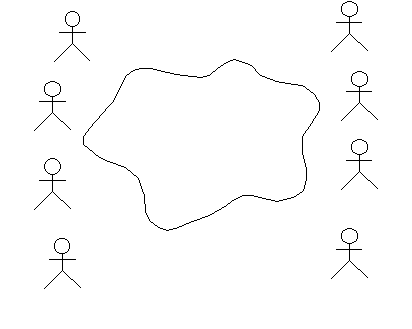
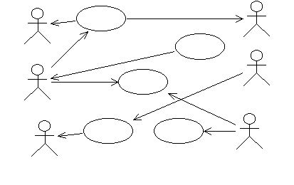
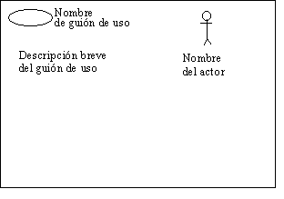
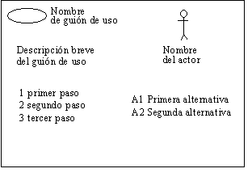
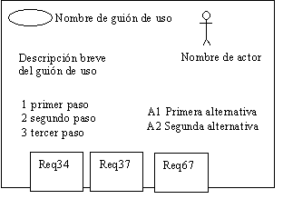

| Directriz: Taller de guión de uso |
 |
|
| Elementos relacionados |
|---|
Organización del tallerEl taller de guión de uso en una reunión tormenta de ideas organizada. Se debe representar una amplia variedad de conocimientos:
Significa que el grupo va a contener personas con formaciones, conocimientos y experiencias diferentes. Intente que el grupo sea pequeño (menos de diez). Un escenario normal consiste en recopilar la mitad del grupo del equipo de desarrollo y la otra mitad de representantes del usuario. En el centro se debe situar el moderador. El moderador debe interpretar su papel como catalizador de todas las ideas y deseos. HerramientasSe necesitan las herramientas siguientes:
Definición de actoresIntente identificar quién o qué va a utilizar el sistema. Empiece, inicialmente, con personas reales que puedan utilizar el sistema; a la mayoría de personas les cuesta menos centrarse en lo concreto en lugar de lo abstracto. Una vez que se hayan identificado los usuarios, intente identificar el rol que juega el usuario al interactuar con el sistema que, por lo general, es un nombre adecuado para un actor. Al identificar a los actores, asegúrese de que escribe una descripción corta para cada actor; suelen ser unos puntos en los que se captura el rol que juega el actor con respecto al sistema y, más tarde, las responsabilidades del actor servirán de ayuda para determinar lo que el actor necesita del sistema. Cuando defina los actores, no olvide los otros sistemas con los que va a interactuar el sistema que se está diseñando. El icono para un actor aquí es engañoso, puesto que parece que implica "persona", pero el concepto del actor también abarca sistemas. No obstante, primero céntrese en buscar actores "humanos"; muchos grupos actúan mejor cuando se centran en lo familiar, y después lo pueden considerar más esotérico. No se preocupe por la estructura del modelo de guión de uso, ni sobre las relaciones entre los actores; simplemente, capture las personas o las cosas que van a utilizar el sistema. Céntrese en la identificación y prepárese para buscar muchos actores. No se preocupe demasiado acerca de filtrar la lista ahora; la identificación de guiones de uso (vea más abajo) se ocupa de ello. Un sistema administrativoPlantee esta pregunta: ¿Qué roles de la organización van a utilizar el sistema? Dibuje una figura para cada rol que se sugiera y escriba un nombre debajo de cada figura. A continuación, liste dos columnas de actores en la pizarra, una para cada parte del grupo o icono que ya ha dibujado. En ocasiones puede ser útil usar la palabra rol o usuario en lugar de actor. Preguntas que plantear:
 ¿Instancia o clase?Es posible que se le planteen preguntas tales como "¿Por qué no es Tom el actor? Tom es el que siempre se ocupa de hacerlo". A continuación, debe plantear más preguntas para que se comprenda el rol de Tom. El nombre del actor debe reflejar el rol.
Muchos actores se pueden identificar directamente a través de sus posiciones normales en la organización. Una posición en la organización puede corresponder a más de un rol en el sistema. Por ejemplo, Tom puede ser un trabajador habitual del almacén, así como la persona responsable de reorganizar el almacén para crear espacio para nuevos productos. Ambas responsabilidades pueden ser dos actores diferentes para el sistema. Es posible que algunas personas deseen generalizar hasta el extremo. Pueden sugerir un Usuario como actor y, a continuación, sugerir que es el único actor que se necesita. Cierto, pero aburrido y no añade nada a la comprensión del sistema. Intente evitar discutir esta sugerencia si se presenta. Anote el actor Usuario en la pizarra y continúe con el actor siguiente. Trucos de la negociación
Para definir los actores se tarda, generalmente, entre 1 y 4 horas. La pizarra debe listar ahora varios actores, pero asegúrese de que sigue habiendo espacio para añadir guiones de uso. Cuando el conjunto de actores parezca estar completo, es el momento de empezar con los guiones de uso.  Definición de un guión de usoBorre el grupo o icono de la pizarra y empiece a identificar guiones de uso. Céntrese en guiones de uso concretos - evite discusiones sobre las relaciones de inclusión y ampliación. Dibuje una elipse y escriba el nombre de cada sugerencia. Dibuje flechas a los actores. Utilice el hecho de que no sabe nada sobre la aplicación como fuerza. Los participantes del taller le deben indicar lo que se supone que debe hacer el sistema. Debe plantear muchas preguntas sobre el sistema. Cuando los participantes le faciliten explicaciones, los guiones de uso irán apareciendo. Algunas personas pueden comprender el concepto de los guiones de uso a la primera, y otras no. Para presentar el concepto desde una perspectiva simplificada, haga que alguien dibuje una vista del sistema. Una vista del sistema es una abstracción del sistema. Por ejemplo, puede ser un servidor con una base de datos y un número de cliente, o bien, un número de placas de circuito con sus tareas especiales marcadas. Esta vista es, por lo general, fácil de ilustrar: uno de los participantes toma un rotulador de la pizarra y muestra cómo va a funcionar el sistema. La vista del sistema ayuda a ampliar los guiones de uso del marco del sistema al marco e, implícitamente, señalan a un número de estados del sistema diferentes. Plantee preguntas sobre los estados, y aparecerán algunos guiones de uso más. Compruebe lo que sucedería si se acabaran comunicaciones diferentes. Le puede ayudar a identificar flujos alternativos en los guiones de uso. Si trabaja con un sistema técnico, la vista del sistema suele ser algo que todos conocen bien y puede ser el mejor modo de encontrar actores. En este caso, puede dejar que dibujen la vista del sistema antes de empezar a solicitar actores. Si trabaja con un sistema administrativo, es posible que la vista del sistema no resulte tan obvia para todos. En este caso, un gráfico en el que se describan las rutinas manuales puede resultar de gran utilidad. El gráfico puede describir cómo se mueve una entidad empresarial de una persona a otra y lo que se supone que deben hacer. Para visualizar el proceso del pedido y la entrega, el gráfico puede mostrar una vista esquemática de la oficina del cliente, nuestra oficina, el almacenamiento y el almacenamiento del cliente. Asegúrese de que el modelo de guión de uso y la entidad empresarial/vista del sistema resultan claramente visibles para todos. En este caso, puede venir bien disponer de dos pizarras. Permita que los guiones de uso tengan nombres largos. Un guión de uso recién identificado puede tener un nombre tan largo como una frase. Es un buen principio de la breve descripción del guión de uso y, posteriormente, se va acortando el nombre. Siempre hay varios guiones de uso que parecen tener partes en común. Asegúrese de que todos comprendan que ahora es correcto y se puede aceptar. Aún no es necesario estructurar, puesto que no se sabe lo suficiente sobre el contenido de los guiones de uso. Debe esperar hasta que se haya esquematizado el flujo de sucesos para sacar a colación las discusiones sobre las relaciones de los guiones de uso. Cuando el grupo acuerda que los guiones de uso de la pizarra abarcan la funcionalidad de todo el sistema, haga una pausa para comer. Al volver de la comida, revise los resultados de la sesión matinal:
Preguntas que plantear:
Escritura de una descripción breve para cada guión de usoTrabaje con los guiones de uso uno a uno, y cree un gráfico sobre caballetes para cada guión de uso. Dibuje una elipse y escriba el nombre del guión de uso en la parte superior del gráfico. Tome un lápiz y solicite al grupo que le ayude a escribir una descripción breve del guión de uso. Una descripción breve no debe tener entre 1 y 3 frases. En ocasiones resulta útil dibujar los actores conectados al guión de uso. Intente dejar vacía la mitad del papel para el paso siguiente.  Durante este trabajo, observará que algunas cosas que todos consideraban que claras, en realidad no lo están en absoluto. Consulte los requisitos identificados como necesidades y características clave de los usuarios en el apartado Visión e intente buscar si existe algún requisito de este guión de uso. Aparecen nuevos guiones de uso. Algunos guiones de uso desaparecen. Ponga los papeles de los guiones de uso en las paredes. Intente organizarlos con una columna por área funcional. (No utilice las pizarras para esto. Se necesitan para la vista del sistema, los actores y los guiones de uso). Si no puede resolver las preguntas inmediatamente, anótelas en un adhesivo y colóquelas en el guión de uso adecuado. Utilice un color para las preguntas. Cuando todos los guiones de uso tengan un gráfico de caballete y una descripción breve, es el momento de la modalidad siguiente. Es aconsejable dedicar una tiempo a la discusión si se necesitan, en realidad, todos los guiones de uso. El modelo que ha creado hasta ahora puede se puede documentar en Rational Rose o Rational RequisitePro y generar en un informe de Inspección de modelos de guión de uso. Descripción paso a paso del flujo de sucesos para cada guión de usoEl procedimiento para empezar a escribir un guión de uso es, en primer lugar, estructurar el texto. No es necesario sentarse solos e intentar estructurar el texto sin obtener antes entradas de los interesados. Trabaje con los guiones de uso uno a uno. Anote las diferentes acciones por orden. No intente imaginarse el aspecto que tendrán las cosas en estructuras de código, bucles, sentencias for-while, etc. - simplemente, trabaje el flujo de sucesos básico y no se preocupe por las alternativas. Enumere los pasos 1, 2, 3, 4. Con el objeto de que el grupo comprenda el nivel de detalle necesario, puede indicar que desea de 5 a 10 pasos en el flujo básico. Una vez que se hayan acordado los pasos del flujo de suceso básico, revíselos e identifique pasos alternativos. Enumere los flujos alternativos A1, A2, A3, A4.  Durante esta discusión se pueden plantear muchas cuestiones, muchas de las cuales no se resolverán hasta llegar a Análisis y diseño. Recuerde anotar todos los problemas junto con las suposiciones que debe plantear. Algunas cuestiones se deben resolver pronto a fin de que el Especificador de requisitos pueda detallar el flujo de sucesos correctamente, y algunas de ellas son cosas que se debe asegurar que quedan resueltas antes de empezar el Análisis y diseño. Lo que tiene en cada gráfico de caballete debe ser suficiente para que el Especificador de requisitos pueda detallar el flujo de suceso del guión de uso. Captura de especificaciones suplementariasDurante esta sesión, habrá muchos Requisitos del sistema que es posible que no pueda capturar fácilmente en un guión de uso. Por lo general, estas sentencias están relacionadas con la funcionalidad, la utilización, la fiabilidad, el rendimiento y el soporte del sistema. Anote estas sentencias en un gráfico de caballete separado. Formarán una base para la Especificación suplementaria. Rastreo de requisitos para guiones de usoRevise las Solicitudes del interesado clave y cada característica del documento Visión y verifique que el modelo de guión de uso las incluya de modo adecuado. Discuta los requisitos o las necesidades del usuario que se han rastreado para guiones de uso determinados.  Tome el documento Visión y lea la primera característica. Escriba su identidad en una (o más si es necesario) notas adhesivas (utiliza un segundo color para simplificar la distinción entre requisitos y problemas). Coloque la nota en los guiones de uso que cumplen el requisito. Posteriormente, puede entrar las rastreabilidades en el depósito de RequisitePro. Siempre hay algunos requisitos que no se pueden conectar a ningún guión de uso:
Dedique unos minutos a revisar la estructura de la sala: ¿Hay guiones de uso sin requisitos? ¿Por qué? ¿Se necesita este guión de uso? O bien, ¿La persona que ha escrito la especificación del requisito ha olvidado dicha funcionalidad? (Suele ser el caso). Esta situación se debe resolver. ¿Sabe el cliente que necesita esta funcionalidad? ¿Está dispuesto a pagar por ello? |
© Copyright IBM Corp. 1987, 2006. Reservados todos los derechos. |